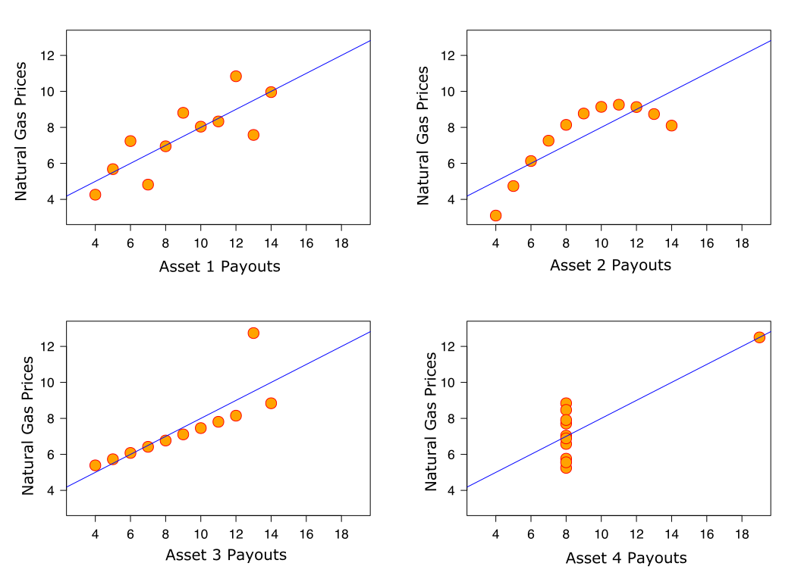

Exploratory Questions#
The hardest part of a data science project is often properly articulating the problem we wish to solve. That’s because properly specifying a problem requires understanding the problem well enough to state it, and often we call issues “problems” precisely because we don’t really understand them!
Enter Exploratory Questions. Exploratory Questions are questions designed to elicit information about our problem space and aid us in prioritizing our efforts and refining our goals.
Of the three classes of questions we detail in this book, answering Exploratory Questions often requires the least technical sophistication, and as a result Exploratory Questions often get the least respect. But because of their critical role in improving our understanding of our objectives, learning to ask and answer Exploratory Questions will have a huge influence on your effectiveness as a data scientist.
In this reading, we will discuss Exploratory Questions from two perspectives. First, we will discuss how to use Exploratory Questions to guide your work, and second, we will discuss how to answer Exploratory Questions accurately.
Note
To illustrate the importance of answering exploratory questions in order to prioritize ones efforts, one need look no further than that most basic of data science tasks: writing performant (i.e., fast) code.
Data science is full of computationally intensive tasks that, if approached incorrectly, can leave a data scientist staring at their computer for hours, days, or even weeks (if they allow it). As a result, most data scientists will go through a phase in their development when they start constantly worrying about how to make every line of code they write as fast as possible. They bend over backwards to write unnatural, unreadable code in order to ensure that they aren’t wasting a single CPU clock cycle.
The problem with this is that humans have incredibly bad intuition about what tasks take a computer a long time. It turns out that even in programs that take huge amounts of time to run, it is often the case that most of the programs runtime is taken up by a single function or loop. As a result, programmers who fixate on ensuring every line of code they write is optimized for speed end up not only wasting their own time, but they also end up writing code that is less natural, harder to maintain, and more likely to contain errors for effectively no benefit.
Indeed, no less a figure than Donald Knuth, one of the greatest programmers in history and author of the famous The Art of Computer Programming, famously wrote of this practice of “premature optimization” (trying to optimize each line of code before you know that the line of code is actually causing a performance problem):
The real problem is that programmers have spent far too much time worrying about efficiency in the wrong places and at the wrong times; premature optimization is the root of all evil (or at least most of it) in programming. [emphasis added]
So what is a programmer interested in performance to do? First, write code in as natural a way as possible. Then, if the result is code that is slower than they would like, ask the exploratory question: “What lines of code are contributing most to this program taking so long to run?” And only then, once the programmer has identifed the problematic parts of their code, optimize it for performance. [^profilers]
Using Exploratory Questions Effectively#
Exploratory Questions are questions about the distribution of features in the world, and answers to Exploratory Questions should make you feel like you understand the landscape you are working in better.
Pulling Together Data#
To illustrate, suppose you’ve been hired by a new non-profit interested in helping reduce energy use in buildings in the United States. They know that fixed structures (factors, stores, houses, etc.) are responsible for a huge share of US energy consumption, and are interested in figuring out how to drive down that energy use by helping building owners improve the energy efficiency of their buildings (by providing information on things like government subsidies for efficiency improvements and the potential value of energy efficient windows, better heating and cooling, etc.).
You could start out by trying to build a fancy supervised machine learning model that tried to predict the energy use of every building in the US based on infrared satellite data and weather information. Indeed, that may even be what you were asked to do! (See our discussion of how stakeholders will often have somewhat wild ideas of what is feasible and what would help most.).
But given this is a new non-profit, it sounds like their real need is probably to figure out how to target their efforts to be most effective. So maybe we should step back and start by trying to answer a few Exploratory Questions that would help the organization decide where to focus its attention:
What type of buildings (industrial, residential, commercial) consume the most power in the US?
The answer to this question can help you prioritize the types of buildings on which to focus your efforts. For example, if industrial or commercial buildings only represent a few percent of all energy consumed by buildings, you don’t need to worry about addressing their needs!
In what region of the US are buildings consuming the most power?
If most energy is being consumed in a specific area, perhaps the non-profit should start by focusing its efforts regionally.
Is there a region of the US where buildings are generating the most CO2?
Not all power is created equal when it comes to climate change! Maybe buildings in California consume a lot of energy, but because they have cleaner power plants, those buildings are indirectly generating less CO2 than those in states in the US South?
Does the average energy use per building vary by region or building type?
If the non-profit plans to approach building owners, it may be easier to have an impact working with a few owners of large buildings than lots of residential homeowners. But of course, that also depends on the answer to our previous question about what types of buildings are using the most power/generating the most CO2!
In what season is most building energy consumed? Is more energy consumed by heating or AC needs, or do the two use similar amounts of power?
Again, this may impact both the regions the non-profit may wish to focus on, and also the types of efficiency retrofits they may wish to prioritize.
Where is power most expensive?
Building owners are most likely to be interested in efficiency retrofits when power is expensive.
While answering these questions is likely to require some significant detective work, and may require some thoughtful data wrangling, none require deeply sophisticated statistical machinery. But that doesn’t mean answering these questions wouldn’t provide huge value to the stakeholder.
Collecting, Merging, and Creating New Data#
Once you start articulating these questions, you can start to see that there is some important data science to do; that’s because the answers to these questions may not all point in the same direction, and so the non-profit likely needs someone to be able to evaluate how these different factors co-vary, and the relative magnitude of different trade-offs (e.g., if fewer buildings use a lot of power in the US South than California, but the US South is using coal power instead of renewable energy, where should the non-profit focus?).
And that, fundamentally, is what Exploratory Questions are about: understanding the distribution of features you care about in the world, and using that information to better understand the problem you want to solve.
This demonstrates one of the key ways that one answers Exploratory Questions: by collecting and merging datasets that had not previously been pulled together. Sometimes this data collection requires no more than finding people who already have the data you need, getting it, and finding a way to merge different data sources (e.g., data on power plant CO2 emissions and data on building energy use), while in other situations this will entail building new datasets yourself by doing things like using Natural Language Processing to make collections of documents (contracts, patient files, public records) analyzable systematically.
Discovering Structure in Data#
Answering Exploratory Questions will not always entail gathering and merging new sources of data; in some cases, answering Exploratory Questions is about making sense of existing data sets by identifying hidden (latent) structures. This can be accomplished by a range of tools, but this practice is most commonly associated with unsupervised machine learning techniques.
If you are familiar with machine learning techniques already, you are likely most familiar with supervised machine learning, in which we tell our algorithms what we want to do by providing lots of examples of the behavior we want them to emulate in a training dataset. For example, if we want a supervised machine learning algorithm to identify pictures that contained dogs, we might give them lots of pictures with and without dogs that include labels for whether there’s a dog in each picture. From these examples, the algorithm then learns to emulate the demonstrated behavior.
In unsupervised machine learning, we instead tell our algorithms the type of pattern we’re looking for in general terms, and it then attempts to find that pattern in the data. In a clustering algorithm, for example, we might ask our algorithm to split the data into three clusters where the observations within each cluster are as similar to one another as possible, and the observations in different clusters are as different from one another as possible. Then the algorithm will attempt to find cluster assignments for each observation to meet that goal.
To illustrate how this might be useful, suppose a medical researcher is interested in a poorly understood disease like Chronic Fatigue Syndrome. They have lots of patient data on people diagnosed with the disease, but it’s impossible for them to just look at these gigabytes of thousands of patient records and “see” any meaningful patterns. But if this researcher suspects that the constellation of symptoms referred to as Chronic Fatigue Syndrome may actually be caused by more than one medical malady, they might turn to a clustering algorithm to help.
They might ask, for example, “if you were to group patients into three groups so that the patients in a cluster had similar self-reported symptoms, but patience in different clusters had different symptoms, how would you cluster these patients?” The researcher could then look at the data and evaluate whether the clusters generated by this algorithm resulted in grouping patients in a pattern that seemed diagnostically meaningful, like if one cluster included more patients reporting fatigue when doing any exercise, while another cluster reported they felt better when they exercised, but felt a high level of baseline fatigue that didn’t respond to sleep.
The choice of three here is arbitrary, and in practice, one would generally run their clustering algorithm for clusters of 2, 3, 4, etc., and compare the results for patterns that seemed meaningful based on the researchers’ medical knowledge.
Answering Exploratory Questions Effectively#
Answering Exploratory Questions effectively is all about taking large datasets that human minds cannot comprehend and finding simpler representations that we can wrap our heads around to help us understand the world around us. Dropping a giant dataset with the CO2 emissions and latitude and longitude of every power plant in the US alongside a business survey of energy consumption by different companies broken down by building on the desk of the CEO of the environmental non-profit in the example above would clearly not aid them in the slightest to understand the world any better, just as a thumb drive with hundreds of gigs of patient data isn’t helpful to a medical researcher in its raw form. The sheer amount of data embodied by those datasets is just too great.
A map showing CO2 emissions by region, or a summary of the features that are most common within each patient cluster, by contrast, is something humans can wrap their heads around. And the reason it is understandable is due in large part to the fact that these are simple representations of the patterns in the data that matter for the question we seek to answer with all the noise that isn’t critical removed. In information theoretic terms, we’ve taken a huge amount of noisy information and reduced it to just the signal we care about, which can be communicated with far less information.
But there’s a challenge that’s inherent to this type of process of simplification which you may already be noticing: answering Exploratory Questions requires identifying what is important and throwing everything else away. And it is for this reason that answering Exploratory Questions well is dependent on the judgment of the data scientist.
To illustrate the point, suppose I told you that in one university math course, the average grade was a B-. You might infer that students were doing pretty well! But now suppose I told you that in a different university math course, 20% of the students had gotten a 0 on the midterm and on the final—you would probably infer something was going seriously wrong in that class. And yet those two statistics could both be true of the same class—the only difference is what patterns in the data I, the data scientist, have decided are meaningful to communicate to you, the reader.
The Danger of the Helpful Computer#
The example of the math class in which the average grade was a B- and 20% of the students were failing also illustrates one of the great dangers of tools for data summarization: they are so eager to please, they will always provide you with an answer, whether that answer is meaningful or not. I think most readers would agree that learning that the average grade in the class was a B- actually misleads more than it informs (since for the class to have an average grade of 80% and a 20% fail rate, the grade distribution would need to be something like 20% 0’s and 80% 100’s). Indeed, it’s worth emphasizing that while hearing “the average grade is a B-” makes the reader think that most kids are doing ok-ish, the reality is that no one in the class is doing ok-ish! They’re either doing horribly or terrifically!
This issue isn’t limited to simple summary statistics, though. Unsupervised machine learning algorithms have the same problem—ask a clustering algorithm to divide a dataset into three clusters, and it will, even if the differences between the groups is very small. And ask a Principal Component Analysis algorithm to find a vector that minimizes the sum of squared distances between all points and the vector and it will, even if that vector isn’t really measuring any kind of central tendency in the data.
Choosing What To Ask and Present#
OK… by now you’ve probably noticed that I’ve been saying you want to make sure you faithfully represent the “important” and “critical” properties of your data, but I haven’t defined those terms. And here’s why: there are no objective definitions of these terms. What is important depends both (a) on the context, and (b) on the value system of you (the data scientist) and your stakeholder.
Context#
To illustrate the importance of context, suppose you have data on antibiotic-resistant infections in a hospital. If you were brought in by the hospital facilities director who wanted to learn what could be done to reduce infections by, say, removing fabric chairs that are hard to disinfect, the location of infections is likely important. If, by contrast, you were brought in by someone studying how the ways antibiotics were prescribed impacted infections, you would instead want to focus on the treatment histories of patients. And if you were hired by the hospital itself which just wanted to reduce infections by any means possible, you’d want to study both to know where future efforts might be best targeted.
The features of the data that are important, in other words, depending on what we may be able to do in response to what we learn. Telling the hospital facilities manager that one of the biggest contributors to antibiotic resistance is the use of antibiotics in raising livestock may be true, and important to society, but not in the context of your stakeholder.
Values#
In our previous reading, we talked about how some questions explicitly invoke our value systems—proscriptive questions, like “should murders be eligible for parole?,” or “is it fair that Americans with more money can donate unlimited amounts of money to Political Action Committees in the United States?”—while others are ostensibly just questions about objective reality. But now we have to blur that line ever so slightly, because even when dealing with questions about objective reality (descriptive questions), our values come into play. How?
Suppose you are a policymaker choosing between two possible policies for reducing \(CO_2\) emissions in the United States. You are told:
Policy A would reduce \(CO_2\) emissions by 95%, have only a minimal impact on unemployment and business profits, and would require a 100 million dollar tax.
Policy B would reduce \(CO_2\) emissions by only 90%, would have a moderate impact on unemployment and business profits, and would require a 200 million dollar tax.
Which would you choose?
Now suppose I also told you that the 100 million dollars in taxes from Policy A would come entirely from taxing people who live below the poverty line, while the 200 million dollar tax for Policy B would be collected from all Americans in proportion to their income. Does that change how you see the issue?
People tend to make decisions based on the information that is available to them, and so what questions get asked (and what data is thus presented) can have a huge impact on how decisions are made. And as a data scientist, you will often be in control of what questions are being asked, and so it is incumbent upon you to ensure that your stakeholders are presented with all the data that you feel is important for them to know.
This is actually one of the big reasons that the lack of diversity in data science is such a problem—it’s not that White men are intrinsically misogynistic or racist, but because our life experiences influence what we think is important, and thus what we ask our data (both authors of this book are White men).
Consider this infamous (though thankfully low stakes) illustrative example of a major tech failure (seriously, go watch the video): the camera that only sees White people. We can’t know exactly what went wrong, but I think it’s safe to say that if there were more Black developers working at HP, surely one of them would have stopped to ask the question “does this work as well for Black faces as White faces?” But no one did, and so this product shipped. But OK, HP isn’t a very good tech company. A better tech company like Google would never make that mistake. Oh wait… Google’s Photos product tagged photos of dark-skinned people as “Gorillas”. And how do we know? Yup, because they released that product too.
OK, fine, you say—but those are just low-stakes settings. Surely that wouldn’t happen when it counts. Cue: facial recognition’s differential error rate for men and women, and for people with light versus dark skin tones. And that technology is being used by police, border agents, and so much more.
To be clear, the problem is not just that these companies created discriminatory algorithms—as we’ll discuss later in this book, almost any machine learning tool trained on public data will end up reflecting all the racist and misogynistic biases of our society. The problem is that they shipped the racist products! No one in these companies thought to stop and ask the question: “hey, before we roll this out, should we check to see how this behaves with people who don’t look like our predominantly light-skinned workforce?”
(Yes, these are machine learning examples, not Exploratory Questions per se. Machine learning examples get a lot more press, so it’s easier to demonstrate to these kinds of news stories. But while the principle that the questions we ask reflect our values is especially important in Exploratory analyses, it also has broad salience, as illustrated here.)
So remember: when deciding what to look at and report in your analyses, remember that people will make decisions based on the patterns you have decided are important, so if you don’t stop to ask a question about, say, gender or racial bias, odds are it won’t be something considered by your stakeholders.
They’ve given you data on four potential assets, and so you run a linear regression looking at the relationship between the value of these assets and natural gas prices. You analyze the data by looking at the correlation between the asset’s payout and natural gas prices, and by fitting a linear regression with natural gas prices and asset payouts. You find that all four assets have essentially identical relationships with natural gas prices—a correlation of about 0.8, and a regression coefficient of about 0.5, suggesting that when natural gas prices rise by a dollar, asset payouts will increase by 0.50 dollars. Perfect, right? All four assets would work equally well, and all four could help limit budget fluctuations for Florida!
Well… no. If we dig a little deeper, we see that these summary statistics are not telling us all the meaningful information in the data; our summary statistics are technically correct, but they aren’t faithfully representing everything that matters given the problem we want to solve.
We can see this by plotting the data1:

Clearly, the relationship between these different assets and natural gas prices are not all the same! Buying the asset in the top left would likely do a good job of smoothing out the state’s budget, but in nearly all years, the asset in the bottom right would be useless for smoothing the state’s budget since in most years the asset’s payoff doesn’t change at all!
This is obviously a simple example and one where a simple plot is sufficient to allow us to see the problem. But this problem is inherent to answering any exploratory question—whether we’re calculating simple statistics or using sophisticated unsupervised machine learning techniques; when we summarize data, it is our job as data scientists to ensure that our summaries are representing the relevant patterns in the data in a faithful and meaningful manner. And because what is relevant depends on the problem we are trying to solve, it’s something we as data scientists have to evaluate, not something an algorithm can do for us. –>
- 1
Anscombe’s quartet. (2022, October 21). Image from Wikipedia Commons..